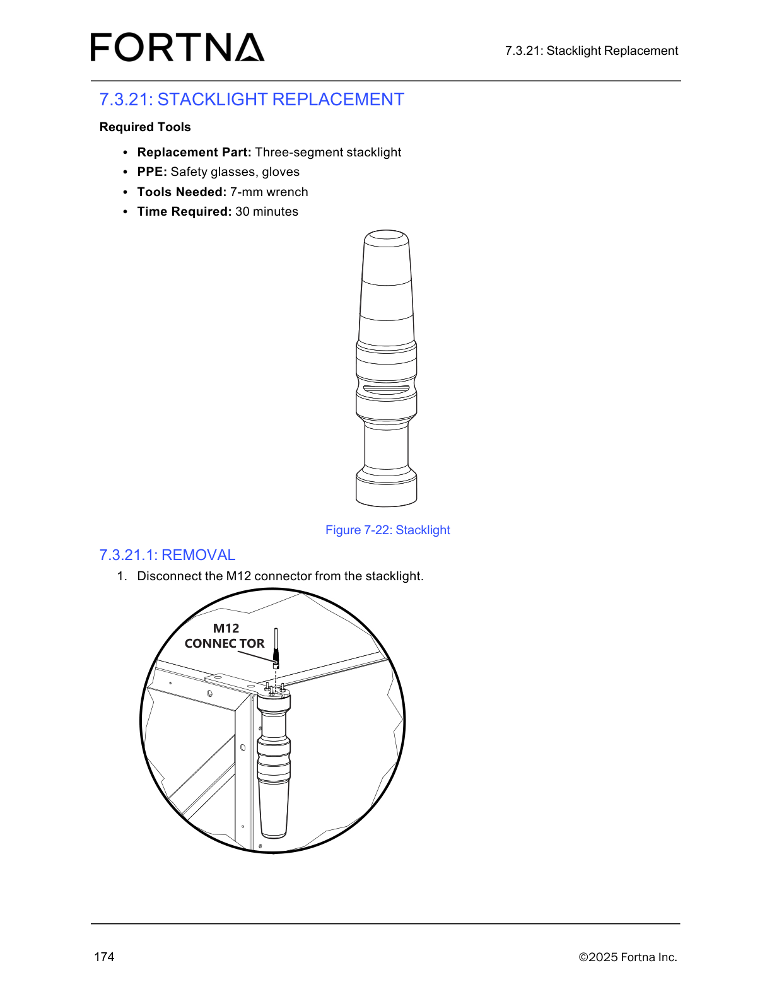

| Procedure ID | proc_perform_operator_station_daily_preventive_maintenance_inspection_controller_stacklights_chute_debris_v1 |
|---|---|
| Title | Perform Operator Station Daily Preventive Maintenance Inspection (Controller, Stacklights, Chute Debris) |
| Procedure Type | operation |
| Primary Role | operator |
| Support Safe | Yes |
| Capability Tags | fleet_system_status |
| Access Surface | physical_floor |
| Audience Roles | operator |
| Failure Pattern Tags | None |
| Validation Status | needs_sme_review |
| Merge Status | source_finalized |
Perform a daily preventive maintenance inspection of the OptiSweep operator station by checking the controller for visible damage, confirming the stacklights are operational, and ensuring the chute area is free of debris such as stuck labels.
Use this procedure for the daily preventive maintenance inspection of the OptiSweep operator station to verify it is safe to operate (controller condition, stacklights operational, and chute free of debris such as stuck labels).

Responsible role: operator
Instruction:
At the operator station, visually inspect the controller for any visible damage (e.g., cracks, loose components, or other physical damage).
Expected result:
The controller shows no visible damage.
Stop or Escalate If:
Responsible role: operator
Instruction:
At the operator station, observe the stacklights and confirm they illuminate/operate as expected (i.e., they are operational).
Expected result:
Stacklights are operational (they illuminate/operate as expected).
Stop or Escalate If:
Responsible role: operator
Instruction:
Inspect the operator station chute area and confirm it is free of debris such as stuck labels.
Expected result:
Chute area is clear with no stuck labels or other debris present.
Stop or Escalate If:
Responsible role: operator
Instruction:
If you find controller damage, non-operational stacklights, or chute debris (e.g., stuck labels), stop the inspection and escalate to the appropriate maintenance support. For tipper-related maintenance, contact Lifecycle Performance Services (LPS) at 888-444-4647.
Expected result:
Inspection is stopped and maintenance support is contacted/escalated due to the identified issue.
Stop or Escalate If: